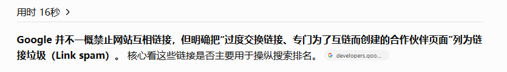

2026年10月27日，哥飞群里的三段对话（11:05–12:27、12:39–13:04、15:34–16:41，共 56 条）围绕新站起步展开：有存量站的人用「老站带新站」铺外链，没有存量的新人用新词站练手；中段把老站打法拆到执行层——做废的站是资产，外链只能单向传递，互链容易被谷歌判定为交换外链。下午的话题转向 AI 视频站，讨论积分封装与成本控制。
讨论的起点：先别漏掉 Bing
小楼开场提醒：网站记得提交到 Bing，那边的流量也不小。这是整段对话里唯一不依赖预算和存量资源的动作，任何新站都能立刻执行。
打法一：老站带新站铺外链
CloudHu 说自己验证过这条路，效果挺好。他手上大约有七八个 DR 在 30 以上的老站，把这些老站的外链挂到新站上，几十条外链就把新站的 DR 做上去了；效率来自于他有一套自动化外链流程。
- 存量：手上约 7–8 个 DR 30+ 的老站
- 动作：把老站的外链位挂到新站上
- 结果：几十个外链，DR 到 30 分
- 效率来源：自建自动化外链
- 成本：域名几百块、外链几百块，且是几个月累计的总花费
然后给新站都挂了上去，几十个外链就30分了
需要说明的是，这是群友口述的单个经验：没有给出老站清单、外链形式、时间曲线和 DR 的测量口径。把它当成「有存量资源时值得一试的打法」可以，当成可复制的标准流程还缺证据。
把做废的站变成资产
第二段对话从另一个角度补完了「老站带新站」的前提。CloudHu 说出海还有一个爽的地方：之前做的东西不会消失。做废的网站可以整理成模板，用于下一次上站；也可以像他一样把 DR 推上去，留作自己的外链资源。
这批果树不长果，不代表我不能把它重新嫁接给其他果树呀
小楼把这比作「果树没长果，但也可以撑一下门面」。两种说法指向同一个前提：站点还活着、还能被索引，才有整理模板和传递权重的价值；一旦域名和站点彻底放弃，这部分资产也就不存在了。
外链只能单向传递
罗刚明问是不是「相互做外链」，CloudHu 连续三次纠正：只能单向做。
- A → B
- A、B → C
- A、B、C → D
- A、B、C、D → E
逻辑很直接：外链的作用是传递权重。A→B 之后再来一条 B→A，等于左脚踩右脚；这种回链多了，容易被谷歌认定为交换外链。
这种回链多了容易被谷歌认为是交换外链
罗刚明提到不少目录站的规则是「你必须贴他的，他才会回你的」。README.md 的判断是「能做，建议少做」——不是绝对禁区，但不该当作主要外链来源。

README.md 贴出的 GPT 回答与这个判断一致：Google 并不一概禁止网站互相链接，但明确把「过度交换链接、专门为了互链而创建的合作伙伴页面」列为链接垃圾（Link spam），核心看这些链接是否主要用于操纵搜索排名。
外链资源从哪来
罗刚明说外链资源难找，自己做了一周 DR 才到 3。对照 CloudHu 用存量老站、几十条外链把 DR 做到 30，差距更多在资源储备，而不只是方法。
- 前期铺量：博客外链，README.md 提到可以用群主的外链插件
- 中后期升级：客座文章、行业目录
- 目录站互链：能做，建议少做
- 识别风险：ahrefs 会把一些广告外链标记为 spam
小楼追问外链插件是否手动添加，聊天中没有得到回答。罗刚明还提到最近看到很多 DR 不高但流量很大的网站，自己「还没学会套路」——这段观察没有展开具体站点和获客方式。
打法二：新词站适合新人练手
罗刚明提出另一面：哥飞那种打法，除了在趋势上碰中大词、后续可以持续吃红利，其他词往往只能做一段时间就没了。
CloudHu 的回应把新词站的价值重新定位：它更适合新人练手，重点不在长期收益，而在快速建立正反馈和认知闭环。
新词那个适合新人练手，主要是给你快速的建立起一个正反馈以及一个认知上的闭环
Pop 补充：哥飞拿出来的是一套适合新手的打法，但肯定还有其它打法。这句话点明了讨论的边界——新词站是入门路径，不是唯一路径。
第二段对话最后又绕回这个判断。罗刚明说订阅难做，尤其是长期主义的订阅，做订阅还得学哥飞打热词、给点正反馈，「不然很容易自闭」。
顺带提到：游戏站与订阅
罗刚明观察到哥飞他们的游戏站挺赚：攻略站做 SEO 长尾落地，其他是小游戏，搬运、套壳即可，不需要自己开发。小楼问这是攻略站还是套壳游戏站，得到的回答是两者结合；小楼同时觉得做订阅的人很赚，罗刚明则认为订阅难做。
这段只是对现象的描述，聊天里没有给出具体站点、流量或收入数据，也没有展开搬运内容的版权风险。
两条路径怎么选
| 维度 | 老站带新站 | 新词站练手 |
|---|---|---|
| 前提 | 手里已有 DR 30+ 的存量站 | 无存量资源也可开始 |
| 主要成本 | 域名数百元 + 外链数百元（几个月累计） | 域名与时间 |
| 见效方式 | 几十条外链把新站 DR 推到 30 分 | 快速拿到流量与真实反馈 |
| 持续性 | 依赖老站资源与自动化能力 | 红利期有限，除大词外难以长期吃 |
| 边界 | 只能单向传递，互链易被判交换外链 | 更适合练手与建立正反馈 |
| 适合谁 | 已有站点矩阵的人 | 刚入门、需要正反馈的新人 |
仍未形成结论的问题
- 自动外链的具体形式与合规边界没有展开；目录站互链「建议少做」的频率也没有标准。
- 群主的外链插件怎么用、是否手动添加，聊天中没有回答。
- 新词红利结束后如何接续、Pop 提到的「其它打法」是什么，都没有继续讨论。
- 游戏站的搬运套壳、长期主义订阅的具体做法，只停留在观察，没有可执行步骤。
- AI 视频站的积分档位、毛利率与付费率假设没有给出具体数值，也没有人验证过测算结果。
延伸讨论：AI 视频站的积分与成本
同一天下午，另一段对话（15:34–16:41，3 条）问的是另一个问题：AI 视频生成怎么封装积分，不知道怎么控制成本。
README.md 的答案是「直接让 AI 帮你分析」：把视频源的积分制度交给 AI，同时说清服务器、域名、成本这些固定支出，再告诉它你想要的毛利率，它会给出定价分析；连付费率、买了不用的比例也能一起估算。
你把这个视频源的积分制度给到AI，然后说清楚你的服务器、域名、成本这些，告诉他你想要的毛利率，他自己会帮你分析。
这段对话没有给出具体的积分档位、毛利区间或验证结果，只提供了一个让 AI 做成本建模的入口。可执行的动作是先收集视频源的计费规则和自有成本，再让模型给出积分档位与毛利率测算。
附录
第一条消息：小楼-2026年10月27日 11:05：你们的网站记得提交到 bing 去，那边流量也不小
最后一条消息：README.md-2026年10月27日 16:41：你把这个视频源的积分制度给到AI，然后说清楚你的服务器、域名、成本这些，告诉他你想要的毛利率，他自己会帮你分析。甚至帮你把付费率、买了不用的比例，这些都能帮你分析出来。